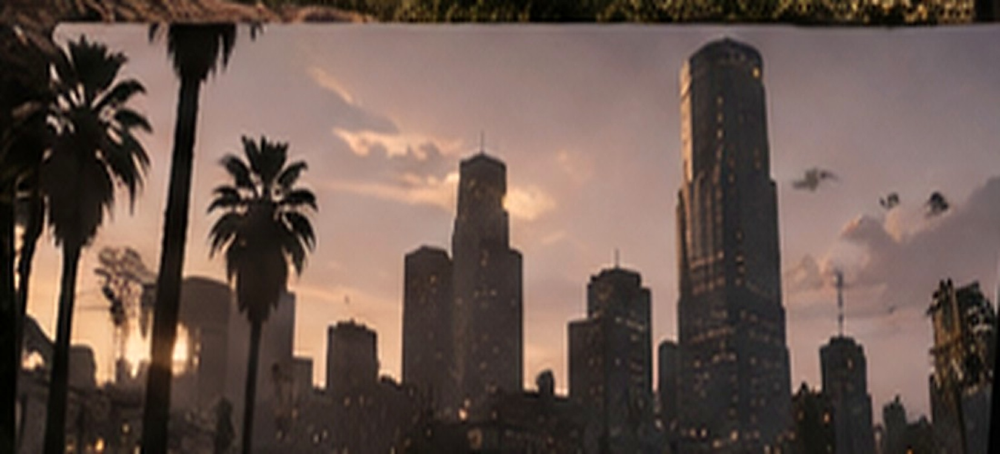
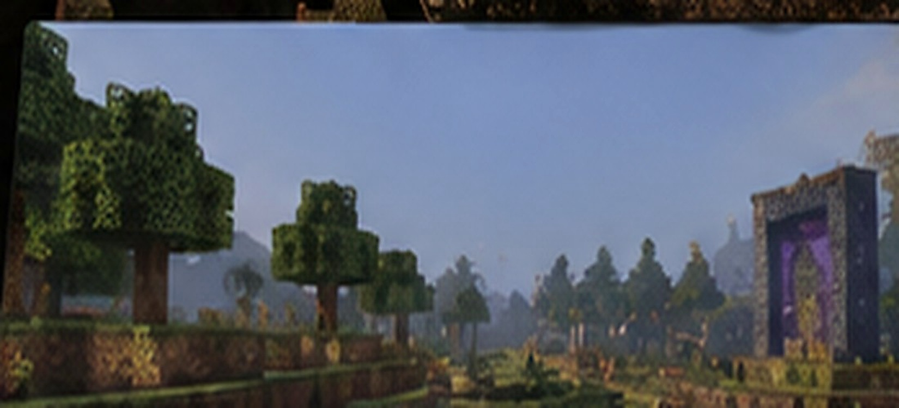
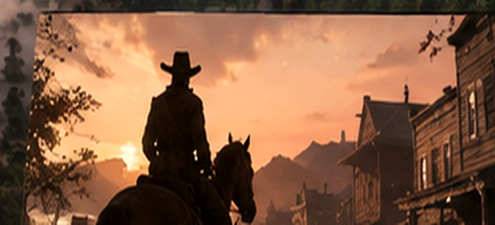

Quando os mundos
deixaram de ser mundos.
Um fenômeno inexplicável rompeu as fronteiras entre quatro universos. Agora, cidades, criaturas, guerreiros e tecnologias de épocas diferentes dividem a mesma realidade.
Encontre os Núcleos de Origem.
Você é Alex, um sobrevivente que desperta no centro da região onde as realidades se cruzaram. Para impedir que tudo desapareça, será preciso atravessar cada universo, recuperar seu Núcleo de Origem e descobrir quem provocou a fusão. Mas separar os mundos pode apagar tudo o que nasceu depois do colapso.
01 — Los Santos

Uma cidade fora de controle.
Ruas, rodovias, veículos e disputas por território. Explore a metrópole, atravesse áreas dominadas por grupos rivais e procure a primeira anomalia escondida entre os arranha-céus. A liberdade urbana encontra um mundo que não segue mais as próprias regras.
02 — Mundo Superior

Construa para continuar vivo.
Um território feito de blocos, recursos e possibilidades. Recolha materiais, fabrique ferramentas, construa abrigo, explore cavernas e enfrente criaturas. Aqui, a criatividade pode ser tão importante quanto a força.
03 — Ilha de Tsushima

A tradição resiste.
Entre florestas, templos e aldeias, a fusão trouxe ameaças que desafiam os guerreiros da ilha. Aprenda estilos de combate, domine a espada e escolha como proteger quem ainda luta para manter sua cultura.
04 — Velho Oeste

O horizonte não tem fim.
Cavalos, cidades poeirentas, saloons e estradas perigosas. Viaje por terras abertas, participe de duelos e conheça pessoas cujos destinos podem mudar conforme suas decisões.
O que conecta tudo?
Exploração, sobrevivência, combate e escolhas. Cada Núcleo recuperado estabiliza uma parte da realidade, mas também revela novas pistas sobre a origem da Grande Ruptura.